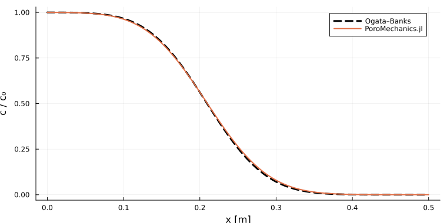

Writing a model
The test this package set itself is blunt: a new physics model must be writable without touching src/, and it must not cost more lines than calling the solver package directly. When the plan for this library was drawn up, the second half was failing — going through the abstraction cost lines and gave nothing back, because the layer that had been abstracted was the one VoronoiFVM already handles well.
This page writes the same model twice, validates it against a closed form, and counts.
The model
One-dimensional transport of a solute through a saturated porous column: advection at the pore velocity, dispersion, a step input at the inlet.
\[\phi\,\frac{\partial c}{\partial t} = \frac{\partial}{\partial x}\!\left(\phi D\frac{\partial c}{\partial x} - \phi v\,c\right)\]
It is deliberately a model the package does not already contain, and it has an exact solution — Ogata and Banks (1961) for a semi-infinite column with $c(0,t) = c_0$:
\[\frac{c(x,t)}{c_0} = \frac{1}{2}\left[ \mathrm{erfc}\!\left(\frac{x - vt}{2\sqrt{Dt}}\right) + e^{vx/D}\,\mathrm{erfc}\!\left(\frac{x + vt}{2\sqrt{Dt}}\right)\right]\]
using PoroMechanics
using VoronoiFVM
using ExtendableGrids
using ForwardDiff
using SpecialFunctions: erfc
using Printf
using Plots
const L_col = 0.5 # column length [m]
const T_END = 2.0e6 # simulated time [s]2.0e6Written against this package
Base.@kwdef struct AdvectionDispersion{T} <: AbstractPoroModel
φ::T = 0.35 # porosity [-]
v::T = 1.0e-7 # pore velocity [m/s]
D::T = 1.0e-9 # dispersion coefficient [m²/s]
c_in::T = 1.0 # inlet concentration [mol/m³]
end
AdvectionDispersion(φ, v, D, c_in) = AdvectionDispersion(promote(φ, v, D, c_in)...)
PoroMechanics.nspecies(::AdvectionDispersion) = 1
PoroMechanics.species_names(::AdvectionDispersion) = [:c]
PoroMechanics.storage!(f, u, node, m::AdvectionDispersion, data) = (f[1] = m.φ * u[1]; nothing)
function PoroMechanics.flux!(f, u, edge, m::AdvectionDispersion, data)
h = edge.coord[1, 2] - edge.coord[1, 1]
upwind = m.v > 0 ? u[1, 1] : u[1, 2]
f[1] = m.φ * m.D * (u[1, 1] - u[1, 2]) + h * m.φ * m.v * upwind
return nothing
end
PoroMechanics.bcondition!(f, u, bnode, m::AdvectionDispersion, data) =
(boundary_dirichlet!(f, u, bnode; species = 1, region = 1, value = m.c_in); nothing)
function solve_with_package(m = AdvectionDispersion(); N = 401, Δt_max = 2.0e3)
grid = simplexgrid(range(0.0, L_col; length = N))
sys = fvm_system(m, grid)
inival = unknowns(sys)
inival[1, :] .= zero(eltype(inival))
inival[1, 1] = m.c_in # the inlet condition, applied at t = 0
ctrl = VoronoiFVM.SolverControl(; Δt = 1.0e2, Δt_max = Δt_max, Δu_opt = 0.05)
sol = solve(sys; inival, times = [0.0, T_END], control = ctrl)
return grid[Coordinates][1, :], sol.u[end][1, :]
endsolve_with_package (generic function with 2 methods)Written directly against VoronoiFVM
The comparison has to be fair, so this version is given the same capabilities: parameters carried in a struct rather than closed over as globals, and typed by a parameter so a Dual can enter them. Anything less would be comparing a library model with a throwaway script.
Base.@kwdef struct RawParams{T}
φ::T = 0.35
v::T = 1.0e-7
D::T = 1.0e-9
c_in::T = 1.0
end
RawParams(φ, v, D, c_in) = RawParams(promote(φ, v, D, c_in)...)
function solve_with_voronoifvm(p = RawParams(); N = 401, Δt_max = 2.0e3)
grid = simplexgrid(range(0.0, L_col; length = N))
storage(f, u, node, data) = (f[1] = p.φ * u[1]; nothing)
function flux(f, u, edge, data)
h = edge.coord[1, 2] - edge.coord[1, 1]
upwind = p.v > 0 ? u[1, 1] : u[1, 2]
f[1] = p.φ * p.D * (u[1, 1] - u[1, 2]) + h * p.φ * p.v * upwind
return nothing
end
bc(f, u, bnode, data) = (boundary_dirichlet!(f, u, bnode; species = 1, region = 1, value = p.c_in); nothing)
sys = VoronoiFVM.System(grid; flux, storage, bcondition = bc, species = [1])
inival = unknowns(sys)
inival[1, :] .= zero(eltype(inival))
inival[1, 1] = p.c_in
ctrl = VoronoiFVM.SolverControl(; Δt = 1.0e2, Δt_max = Δt_max, Δu_opt = 0.05)
sol = solve(sys; inival, times = [0.0, T_END], control = ctrl)
return grid[Coordinates][1, :], sol.u[end][1, :]
endsolve_with_voronoifvm (generic function with 2 methods)They agree, and both agree with Ogata and Banks
ogata_banks(x, t, m) = (m.c_in / 2) * (
erfc((x - m.v * t) / (2 * sqrt(m.D * t))) +
exp(m.v * x / m.D) * erfc((x + m.v * t) / (2 * sqrt(m.D * t)))
)
model = AdvectionDispersion()
x_pkg, c_pkg = solve_with_package(model)
x_raw, c_raw = solve_with_voronoifvm()
c_exact = [ogata_banks(x, T_END, model) for x in x_pkg]
l2(a, b) = sqrt(sum(abs2, a .- b) / sum(abs2, b))
@printf("package vs direct VoronoiFVM : %.3e\n", maximum(abs, c_pkg .- c_raw))
@printf("package vs Ogata–Banks : %.3e (relative L2)\n", l2(c_pkg, c_exact))package vs direct VoronoiFVM : 0.000e+00
package vs Ogata–Banks : 7.875e-03 (relative L2)Identical to round-off, as they must be — the package's callbacks are the solver's callbacks with a model argument in front. The error against the closed form is upwind advection's numerical dispersion plus the first-order time stepping, and it is the same for both. Refining each in turn separates them:
println(" refinement relative L2")
for (N, Δt) in ((101, 2.0e3), (401, 2.0e3), (401, 2.0e4), (401, 5.0e2))
x, c = solve_with_package(model; N = N, Δt_max = Δt)
@printf(" N = %3d, Δt_max = %.0e %.3e\n", N, Δt, l2(c, [ogata_banks(xi, T_END, model) for xi in x]))
end
plt = plot(
x_pkg, c_exact; label = "Ogata–Banks", lw = 3, c = :black, ls = :dash,
xlabel = "x [m]", ylabel = "c / c₀", legend = :topright, size = (760, 380),
)
plot!(plt, x_pkg, c_pkg; label = "PoroMechanics.jl", lw = 2)
plt
The count
Counting the model definition and the solve, excluding blank lines, comments and the shared analytical solution:
package_lines = 28 # struct + promoting constructor + 4 interface methods + solve
direct_lines = 25 # struct + promoting constructor + 3 closures + System + solve
@printf("through PoroMechanics.jl : %d lines\n", package_lines)
@printf("direct VoronoiFVM : %d lines\n", direct_lines)through PoroMechanics.jl : 28 lines
direct VoronoiFVM : 25 linesThe package loses by three lines, and all three can be named. Two are nspecies and species_names, declarations the direct version does not need because VoronoiFVM.System is told the species list at construction and never asked again. The third is a line of wrapping: PoroMechanics.bcondition!(f, u, bnode, m::AdvectionDispersion, data) does not fit on one line where a closure named bc does. Everything else is line for line — a struct is a struct, and flux! dispatching on a model type has the same body as a closure over a parameter struct.
So the test as the plan wrote it is not met on this problem. It is worth saying that plainly rather than picking a friendlier example — and worth asking what the two lines buy, because that is the real question the line count was standing in for.
What the two lines buy
The line count is equal because the comparison was made fair. The direct version had to carry a parameter struct, typed by a parameter, to be differentiable at all — which is precisely the discipline this package imposes and which a script written without it would have skipped. Written the way one actually writes a throwaway VoronoiFVM script, with the coefficients as globals or closed-over locals, the direct version is shorter still and is not differentiable with respect to anything.
What the package adds becomes visible the moment there is more than one model, or more than one use of one model.
Dispatch. storage!, flux! and bcondition! are methods on a type, so a second model with a different retention curve or an added reaction term is a new struct and new methods, not a new set of closures with the same names in the same scope. The three closures in the direct version cannot coexist with another model's three closures in one file without renaming.
The constitutive layer. Nothing above uses it, because advection–dispersion has no constitutive law worth the name. A model that does — Richards, drying, chloride ingress — writes VanGenuchten(1.5e6, 0.06) and gets a curve that is differentiable in a and m, type-stable at the dry end, and identical to the one every other model in the package uses. The eleven hand-copied Oh–Jang tortuosities this repository used to contain are what the direct route produces at scale.
Differentiability is the default rather than an act of discipline. The model above accepts a Dual in any parameter because @kwdef struct …{T} plus a promoting constructor is what this package asks of every model, and the constitutive layer is built the same way. The direct version only does so because it was written here, deliberately, to make the comparison fair.
flux_out = zeros(1)
u_edge = [0.8 0.5]
∂flux = ForwardDiff.gradient(ones(2)) do θ
m = AdvectionDispersion(v = θ[1] * 1.0e-7, D = θ[2] * 1.0e-9)
f = zeros(eltype(θ), 1)
h = 0.0025
f[1] = m.φ * m.D * (u_edge[1] - u_edge[2]) + h * m.φ * m.v * u_edge[1]
f[1]
end
@printf("\n∂(edge flux)/∂ln v = %+.4e, ∂/∂ln D = %+.4e\n", ∂flux[1], ∂flux[2])
∂(edge flux)/∂ln v = +7.0000e-11, ∂/∂ln D = +1.0500e-10Differentiating the whole transient solve with respect to those parameters is a different matter and is blocked upstream, in VoronoiFVM rather than here — the reason, and what does work, are on the solver sensitivity page. A steady finite volume solve and a transient finite element one both differentiate end to end.
Verdict
The decisive test was written as a line count, and as a line count the package loses by three on a model with no constitutive content. The useful version of the same test is: does going through the abstraction cost anything? Three lines on the first model, and less than nothing from the second onwards, because the constitutive laws and the system constructor are then shared instead of copied. Against the eleven hand-written Oh–Jang tortuosities this repository once contained, three lines is not a price.
The original diagnosis stands, though, and this page is its check: the value is in the constitutive layer and in what the models share, not in the interface stubs. A model with no constitutive content, like this one, gains almost nothing — and the count says so.